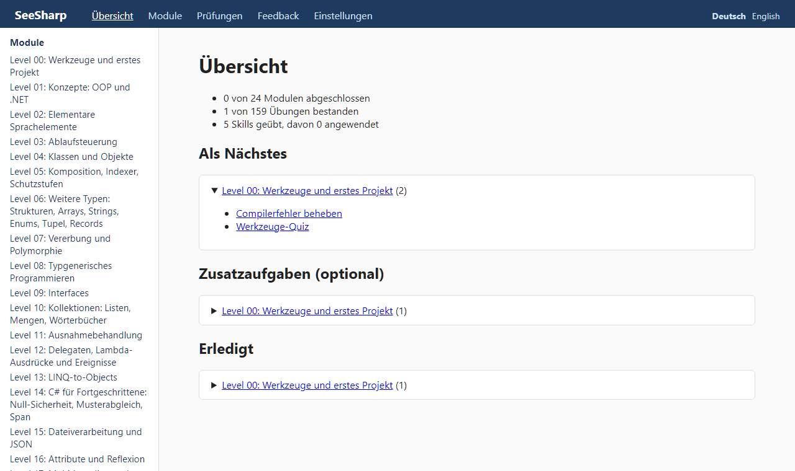
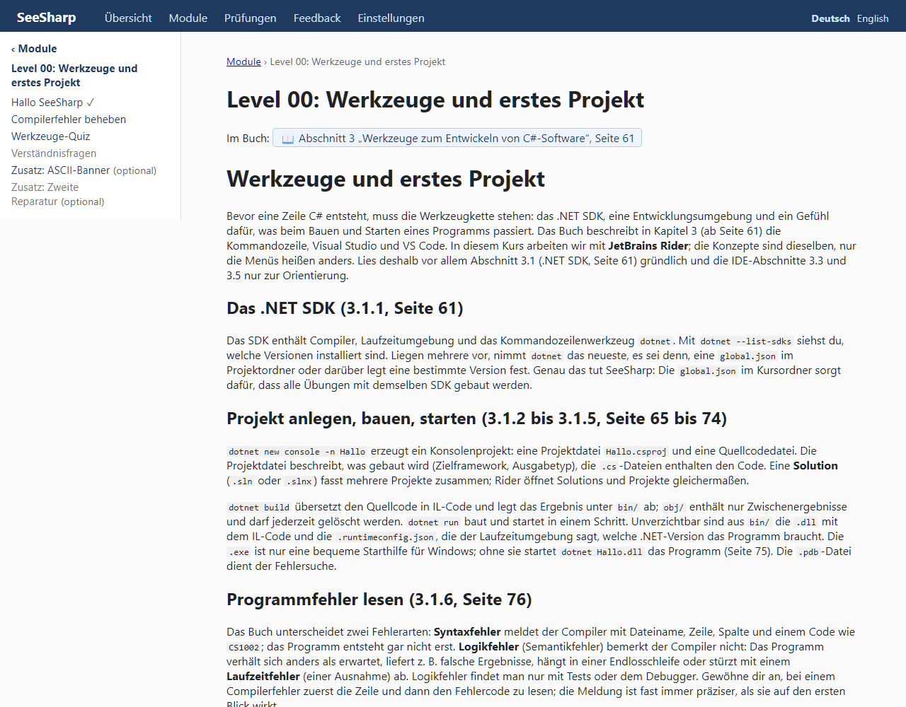
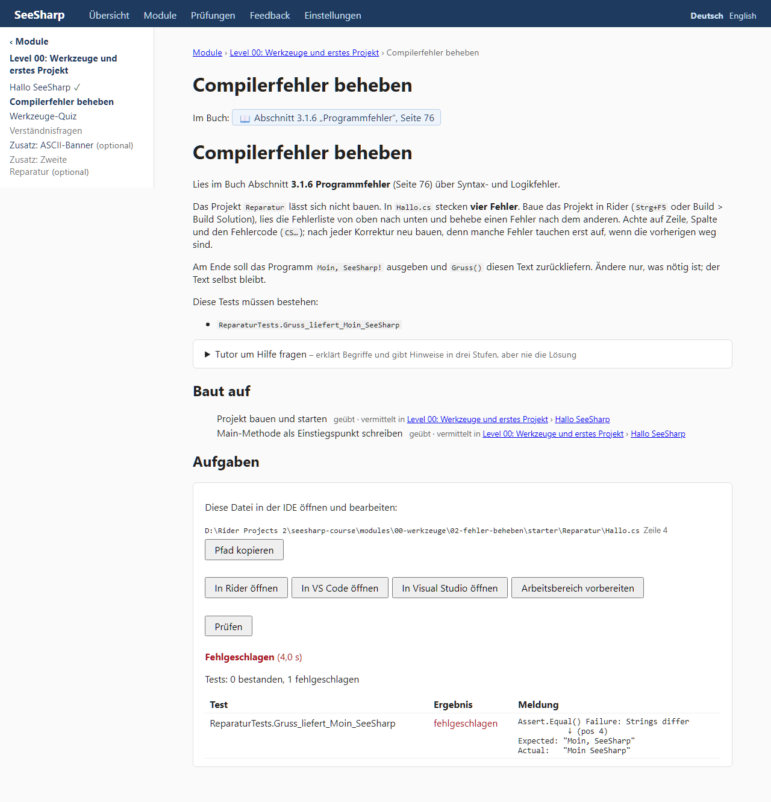

SeeSharp führt Auszubildende Level für Level durch C#: lesen, Fragen beantworten, Code in Rider schreiben. Jede Programmieraufgabe wird mit Unit-Tests geprüft, ein KI-Tutor gibt Hinweise statt Lösungen, und die Betreuung sieht am Ende, was wirklich gemacht wurde.
SeeSharp takes trainees through C# level by level: read, answer questions, write code in Rider. Every coding exercise is graded by unit tests, an AI tutor gives hints instead of answers, and the supervisor sees what was really done.
dotnet tool install -g SeeSharp.Cli
seesharp init
Aktuelle VersionCurrent version {{VERSION}} · Windows · läuft lokal, ohne Kontoruns locally, no account

Für kleine Teams mit 1–5 Auszubildenden. Alles läuft auf dem eigenen Rechner: kein Server, keine Konten, keine Cloud.
For small teams with 1–5 trainees. Everything runs on the trainee’s own machine: no server, no accounts, no cloud.
„Prüfen“ baut den Code und lässt die Tests laufen – in einer sauberen Kopie, damit niemand die Tests anpasst.
“Check” builds the code and runs the tests in a clean copy, so nobody can edit the tests to pass.
Ein Klick öffnet die richtige Datei an der richtigen Zeile in Rider, VS Code oder Visual Studio.
One click opens the right file at the right line in Rider, VS Code or Visual Studio.
Hinweise in drei Stufen, Bewertung freier Antworten, Erklärung falscher Quiz-Antworten – nie die Lösung. Anthropic, OpenAI oder lokal mit Ollama.
Hints in three levels, judging of free-text answers, explanations of wrong quiz answers – never the solution. Anthropic, OpenAI or local with Ollama.
Jede Übung lehrt und braucht Skills. Gesperrte Aufgaben sagen genau, welche Übung vorher dran ist.
Every exercise teaches and requires skills. A locked task names the exercise to do first.
Übungs- und echte Prüfungen mit Zeitlimit; Ergebnisse erst nach Abgabe, der Tutor schweigt.
Practice and real exams with a time limit; results only after submitting, and the tutor stays quiet.
Ein Bericht als Datei, Anmerkungen zu einzelnen Codezeilen – privat oder für den Azubi sichtbar.
A report as one file, remarks on single lines of code – private or shared with the trainee.
Der Kurs basiert auf dem frei verfügbaren Buch „Einführung in das Programmieren mit C# 14“ von Bernhard Baltes-Götz und Paul Frischknecht und verweist auf die passenden Abschnitte.
The course is based on the freely available book “Einführung in das Programmieren mit C# 14” by Bernhard Baltes-Götz and Paul Frischknecht and points to the matching sections.
Jedes Level fasst das Buch zusammen und verlinkt die Seite im PDF. Danach folgen Quiz, offene Fragen und Programmieraufgaben.
Every level summarises the book and links the page in the PDF. Quizzes, open questions and coding exercises follow.

Rote Tests zeigen ihre Meldung. Wer festhängt, fragt den Tutor – der erklärt Begriffe, aber schreibt keinen Code für die Übung.
Failing tests show their message. When stuck, ask the tutor – it explains concepts but writes no code for the exercise.

Die Kommandozeile braucht es nur einmal. Danach startet SeeSharp über sein Symbol in einem eigenen Fenster und aktualisiert sich beim Start selbst.
The command line is needed once. After that SeeSharp starts from its icon in its own window and updates itself on start.
dotnet tool install -g SeeSharp.Cli
seesharp initinit lädt den Kurs nach %USERPROFILE%\seesharp-course (anderer Ort: --dir <Ordner>), holt das Buch als PDF und legt „SeeSharp“ im Startmenü und auf dem Desktop an.
init fetches the course to %USERPROFILE%\seesharp-course (elsewhere: --dir <folder>), downloads the book PDF and adds “SeeSharp” to the Start menu and the desktop.Noch nicht im JetBrains Marketplace, sondern über ein eigenes Plugin-Repository: Settings → Plugins → ⚙ → Manage Plugin Repositories → diese Adresse hinzufügen, dann „SeeSharp“ im Tab Marketplace installieren:
Not on the JetBrains Marketplace yet, but in its own plugin repository: Settings → Plugins → ⚙ → Manage Plugin Repositories → add this address, then install “SeeSharp” from the Marketplace tab:
https://wollume-studios.github.io/seesharp/updatePlugins.xmlseesharp-{{VERSION}}.vsix herunterladen und installieren:
Download seesharp-{{VERSION}}.vsix and install it:
code --install-extension seesharp-{{VERSION}}.vsixBeide Plugins können die Einrichtung auch selbst übernehmen (Set up SeeSharp).
Both plugins can also run the setup for you (Set up SeeSharp).
Einmal im Terminal starten – danach gibt es „SeeSharp (Betreuung)“ im Startmenü:
Start it once from a terminal – afterwards “SeeSharp (Betreuung)” is in the Start menu:
seesharp --adminDer Admin-Modus enthält den Kurs-Editor, Git für das Kurs-Repository und das Review. seesharp --review öffnet alle Level unabhängig vom Fortschritt.
Admin mode has the course editor, Git for the course repository and the review. seesharp --review opens every level regardless of progress.
So läuft ein Review: Der Azubi erstellt unter „Feedback“ einen Bericht (eine ZIP-Datei) und schickt ihn per Mail oder Chat. Du öffnest ihn unter Admin → Review, liest Antworten und Code und setzt Anmerkungen – auch zu einzelnen Zeilen. Geteilte Anmerkungen gehen als Antwortdatei zurück; private bleiben bei dir.
How a review works: the trainee creates a report (one ZIP file) under “Feedback” and sends it by mail or chat. You open it under Admin → Review, read answers and code and add remarks – also on single lines. Shared remarks go back as a reply file; private ones stay with you.